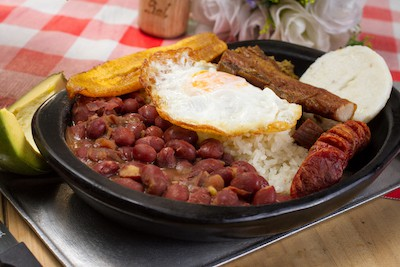

¿Cual es el origen de la bandeja paisa?
La Bandeja Paisa es probablemente el plato más popular de Colombia, es originario de la región andina del país, donde a las personas se les llama "Paisas".
Tradicionalmente la Bandeja Paisa incluye frijoles, arroz blanco, chicharrón, carne en polvo, chorizo, huevo frito, plátano maduro, aguacate y arepa, pero se puede sustituir la carne en polvo por carne de res o de cerdo a la parrilla.
Ingredientes
- Frijoles Antioqueños
- Arroz Blanco
- Carne en polvo
- Chicharrones
- Chorizos Cocidos
- Huevos Fritos
- Tajadas de Plátano
- Aguacate
- Hogao
Instrucciones
- Preparar los frijoles, hogao y carne en polvo el día danterior y guardar en la nevera.
- Cuando este listo para servir la bandeja paisa, caliente los frijoles ,hogao, la carne en polvo y prepare los chicharrones.
- Cocine el arroz blanco y los plátanos. Freír los huevos y chorizos.